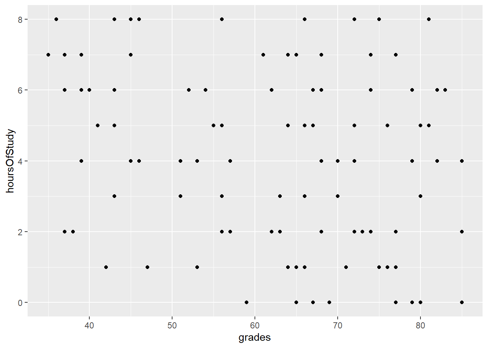
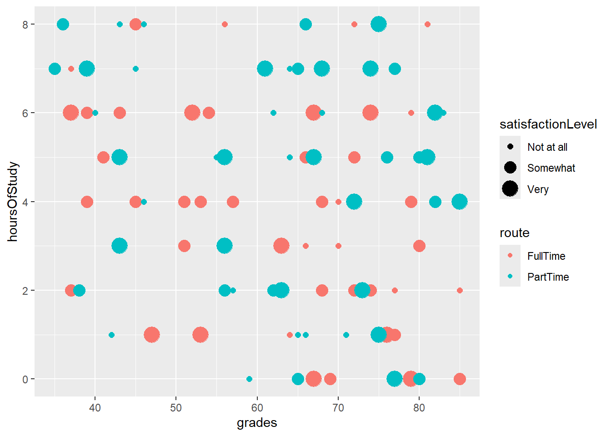
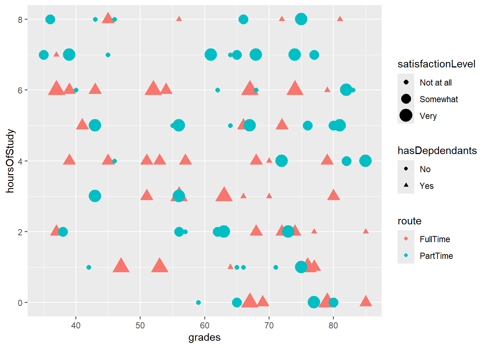
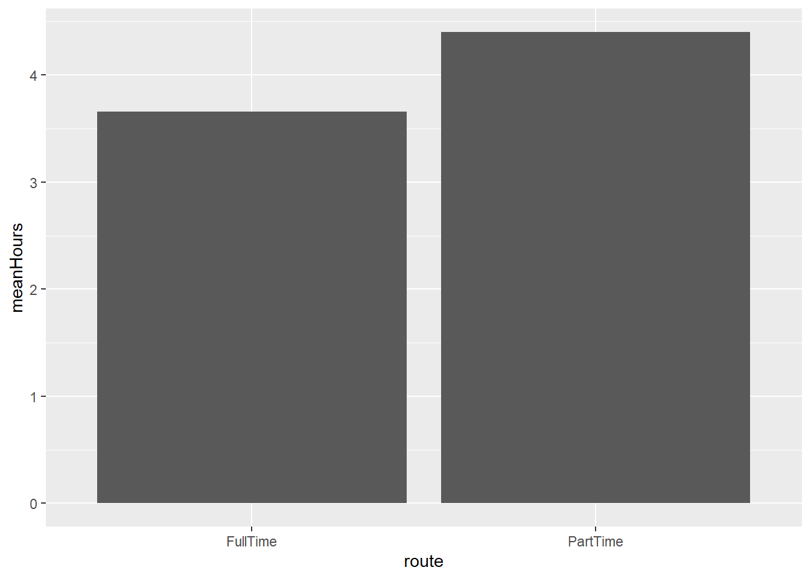
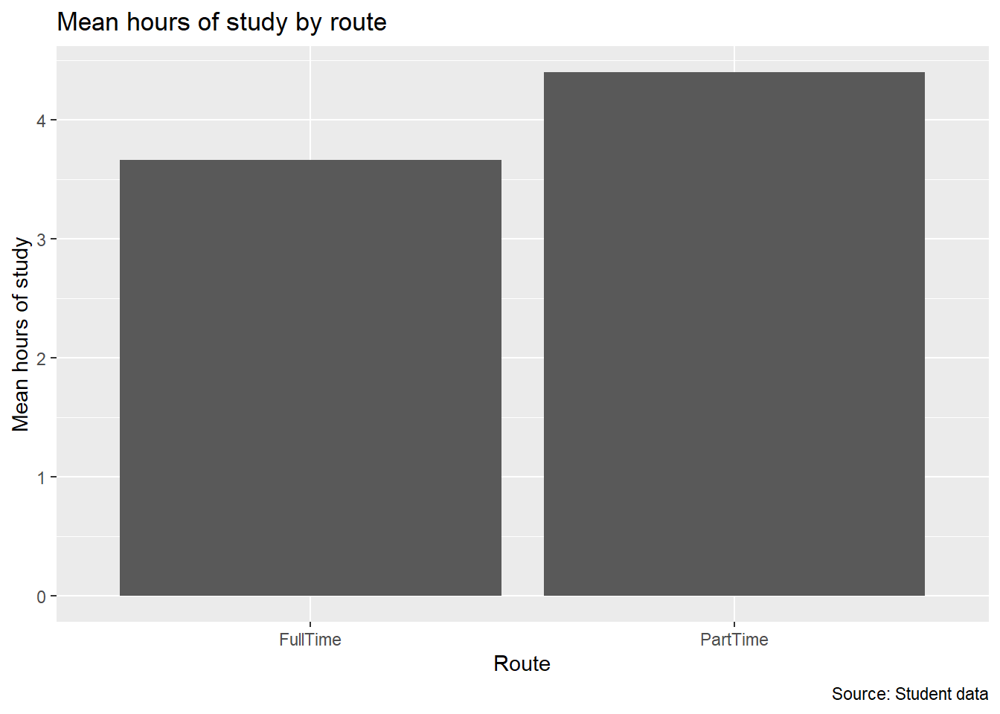

10 Creating plots with ggplot2 in R
At the end of this chapter, you will be able to:
- Describe the ggplot “grammar of visualisation”: coordinates and geoms
- Write a graph function to display multiple variables on a plot
- Amend the titles and legends of a plot
- Save plots in PDF or image formats
10.1 The “grammar of visualisation” with ggplot
With ggplot, graphs are made up of 3 components: - A dataset - A coordinate system (e.g., the X and Y axes) - Visual marks to represent data (geoms)
In the above example, the dataset is the studentData that we used previously. The grades variable is mapped to the X axis. The hoursOfStudy variable is mapped to the Y axis. The graph is created using the following code:
library(ggplot2)
ggplot(data=studentData, aes(x=grades,y=hoursOfStudy)) +
geom_point()
In this code:
- We specify the dataset and the variables for the X and Y axes.
- We specify the geom that will represent the data points visually (in this case, each datum is a point).

Remember the
+ operator
- The layers of a ggplot are separated using the
+operator. That is, we first specify the dataset and the variables for the X and Y axes, and then we add a+, then thegeomthat will represent the data points visually.
10.2 Adding more variables to a plot
One of the things that makes ggplot so powerful is that you can add more variables to a plot. You can map these variables to different aesthetic attributes of the plot, such as colour, shape, or size.
This can be done either in the ggplot() function or in the geom_point() function.
10.2.1 Example: assigning a variable to colour (2 different approaches)
- 1
-
The
coloraesthetic is mapped to theroutevariable in the mainggplot()function. - 2
-
The
geom_point()function is used to represent the data points visually and it takes its colour from the mainggplot()function.
10.2.2 Example: assigning a variable to size
1ggplot(data=studentData, aes(x=grades,y=hoursOfStudy, size = satisfactionLevel, colour = route)) +
2 geom_point()- 1
-
The
sizeaesthetic is mapped to thesatisfactionLevelvariable in the mainggplot()function. - 2
-
The
geom_point()function is used to represent the data points visually and it takes its size from the mainggplot()function.

10.2.3 Example: assigning a variable to shape
1ggplot(data=studentData, aes(x=grades,y=hoursOfStudy, size = satisfactionLevel, colour = route, shape = hasDepdendants)) +
2 geom_point()- 1
-
The
shapeaesthetic is mapped to thehasDepdendantsvariable in the mainggplot()function. - 2
-
The
geom_point()function is used to represent the data points visually and it takes its shape from the mainggplot()function.

10.3 Different types of geoms: bar charts
The geom_point() function is just one of many geoms that you can use in ggplot. Another common geom is geom_col(), which is used to create bar charts.
When creating a bar chart there are 2 approaches:
- summarise the data before plotting
- let ggplot do the summarising for you
10.3.1 Example: summarising the data before plotting
library(dplyr)
studentData %>%
group_by(route) %>%
summarise(meanHours = mean(hoursOfStudy)) %>%
ggplot(aes(x = route, y = meanHours)) +
geom_col()
In the above code, we first use the group_by() and summarise() functions from the dplyr package to calculate the mean number of hours of study for each route (see previous lessons for this). We then use the ggplot() function to create a plot with the route variable on the X axis and the meanHours variable on the Y axis. Finally, we use the geom_col() function to create the bar chart.
Remember to refer to the summarised variable in the
ggplot() function
When you summarise the data, remember to refer to the summarised variable in the ggplot() function, not the original variable. In the above example, we use meanHours in the ggplot() function, not hoursOfStudy.
If you find it easier, you can save the summarised data as a new object and then use this in the ggplot() function.
10.3.2 Example: letting ggplot do the summarising for you
ggplot(data=studentData, aes(x = route, y = hoursOfStudy)) +
stat_summary(fun = mean, geom = "col")In the above code, we use the stat_summary() function to calculate the mean number of hours of study for each route. We specify that we want to calculate the mean using the fun = mean argument, and we specify that we want to create a bar chart using the geom = "col" argument.
10.4 Changing the titles and legends of a plot
You can change the titles and legends of a plot using the labs() function. This function allows you to change the title of the plot, the titles of the X and Y axes, and the legend title.
studentData %>%
group_by(route) %>%
summarise(meanHours = mean(hoursOfStudy)) %>%
ggplot(aes(x = route, y = meanHours)) +
geom_col() +
labs(title = "Mean hours of study by route",
x = "Route",
y = "Mean hours of study",
caption = "Source: Student data")
In the above code, we use the labs() function to change the title of the plot to “Mean hours of study by route”, the title of the X axis to “Route”, the title of the Y axis to “Mean hours of study”, and the caption to “Source: Student data”.
10.5 Themes in ggplot
You can change all of the colours and other appearance elements in ggplot. However, it can be easier to change the appearance of a plot using themes. Themes allow you to change the background colour, the colour of the text, the size of the text, and other aspects of the appearance of the plot.
studentData %>%
group_by(route) %>%
summarise(meanHours = mean(hoursOfStudy)) %>%
ggplot(aes(x = route, y = meanHours)) +
geom_col() +
labs(title = "Mean hours of study by route",
x = "Route",
y = "Mean hours of study",
caption = "Source: Student data") +
theme_minimal()
In the above code, we use the theme_minimal() function to change the appearance of the plot to a minimal theme. There are many other themes that you can use, such as theme_light(), theme_dark(), and theme_bw().
10.6 Saving plots in ggplot
The best way to save plots (and get reliable results) is to save them using the ggsave() function. This function allows you to save plots in a variety of formats, such as PDF, PNG, and JPEG. For publication-quality plots, it is best to save them in PDF format, because this format is scalable and resolution independent.
studentData %>%
group_by(route) %>%
summarise(meanHours = mean(hoursOfStudy)) %>%
ggplot(aes(x = route, y = meanHours)) +
geom_col() +
labs(title = "Mean hours of study by route",
x = "Route",
y = "Mean hours of study",
caption = "Source: Student data") +
theme_minimal()
ggsave("studentData_plot.pdf", width = 6, height = 4, dpi = 300)In the above code, we use the ggsave() function to save the plot as a PDF file called “studentData_plot.pdf”. We specify the width of the plot as 6 inches, the height of the plot as 4 inches, and the resolution as 300 dots per inch (dpi). dpi is not actually used for PDF files, but it is useful for other file formats, such as PNG and eps.
In terms of specifying the width and height of the plot, it can take some fiddling around to get the right dimensions. You can specify the width and height in pixels, but it is generally better to specify them in inches, because this is a more standard unit of measurement for plots. I recommend thinking in terms of the aspect ratio of the plot, rather than the exact dimensions. For example, if you want a wide plot, you might specify the width as 6 inches and the height as 4 inches. If you want a square plot, you might specify the width and height as 4 inches each. If you want a tall plot, you might specify the width as 4 inches and the height as 6 inches.
Once the aspect ratio feels right, you can adjust the width and height to get the exact right dimensions for your plot.
Plots will save into the working directory
When you save a plot using the ggsave() function, the plot will be saved into the working directory. You can specify a different directory by specifying the full path to the file, such as “C:/Users/username/Documents/studentData_plot.pdf”.
It’s easier just to set the working directory to the folder where you want to save the plots!
10.7 Summary
In this chapter, you have learned how to create plots with ggplot in R. You have learned about the “grammar of visualisation” with ggplot, including the dataset, the coordinate system, and the visual marks that represent the data. You have learned how to write a graph function to display multiple variables on a plot, how to amend the titles and legends of a plot, and how to save plots in PDF or image formats.